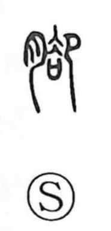

脚

Uncategorized
Kun: ashi | On: kyaku, kya
leg ・ lower leg ・ supporting foot
Explanation
A phono-semantic character: the flesh sign 月 marks a body part, and 却 supplies the sound (On reading kyaku). In Shirakawa’s reading, 却 depicts a kneeling figure bowing at the expulsion of the loser in a sacred ordeal, before a ritual covenant chest whose lid has been removed and into which petitions to the gods are placed. From that scene arise meanings like “to discard” and “to withdraw.” With the flesh element added, the graph names the leg—especially the portion below the shin—and by extension the ‘legs’ or feet that support vessels and other objects.